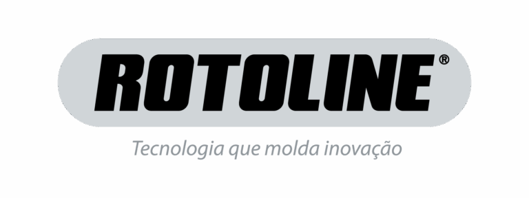

Kelin Regina
Marketing Digital & Comunicação Editorial
Transformando estratégia e escrita jornalística em conteúdo corporativo de alto valor e foco em resultados orgânicos.

Sobre Mim
Sou profissional de Marketing e Comunicação com sólida bagagem em produção de conteúdo de marca, copywriting, SEO e jornalismo editorial.
Minha trajetória une a precisão e apuração técnica do jornalismo impresso com o dinamismo das estratégias digitais corporativas, criando narrativas fortes para os setores de agronegócio, finanças e tecnologia.
Áreas de Atuação
Redação Editorial
Copywriting
Estratégia SEO
Comunicação Corporativa
Projetos em Destaque

- Desenvolvimento de tom de voz institucional.
- Criação de copys focadas em conversão financeira para consórcios.

- Estruturação de cronogramas integrados de publicação corporativa.
- Posicionamento digital premium focado no mercado de antecipação e finanças.

- Criação e redação técnica de artigos otimizados para mecanismos de busca.
- Posicionamento de autoridade digital voltado para o setor industrial.
Revista Agro&Negócios
📖 Edição I
- Reportagem Associada: Investigação jornalística especializada em campo, entrevistas com especialistas do setor agropecuário e análise de produtividade regional.
📖 Edição II
- Reportagem Associada: Cobertura focada nas inovações tecnológicas do mercado de insumos e tendências sustentáveis do agronegócio nacional.
Revista Casar
📖 Edição I
- Reportagem Associada: Matérias com foco no comportamento do consumidor de luxo, mercado de festas e tendências de alta costura.
📖 Edição II
- Reportagem Associada: Artigo focado no planejamento de grandes eventos, curadoria de fornecedores e aplicação prática de crônicas afetivas.
Minhas Habilidades
SEO & Copywriting
Planejamento Editorial
Jornalismo & Apuração
Inbound Marketing
Gestão de Canais Corporativos
Vamos Criar Histórias?
Entre em contato para alinhar novos projetos de conteúdo, marketing ou consultoria de comunicação.